¿ Es el ambiente del Apostolos Nikolaidis de Atenas realmente infernal o se trata sólo de un mito como el del estadio Ali Sami Yen de Estambul.
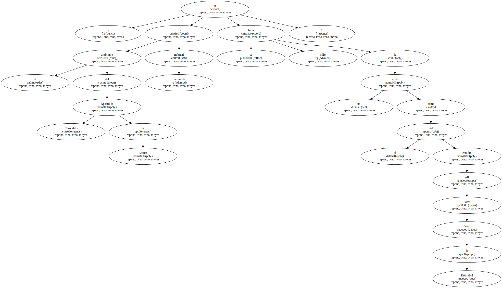La respuesta la tienen los jugadores de los cuatro equipos españoles - - Deportivo , Valencia , Mallorca y Real Madrid - - que han viajado a Grecia en las dos últimas ediciones de la Liga de Campeones.
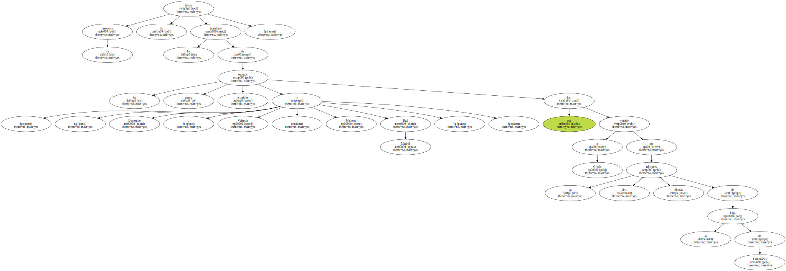Todos han salido vivos , eso sí , pero ninguno de ellos ha logrado ganar , ya sea en el Apostolos Nikolaidis o en el Estadio Olímpico de Atenas , ante un público que no respeta las normas de la UEFA y convierte el campo en una auténtica caldera , al lanzar todo tipo de bengalas.
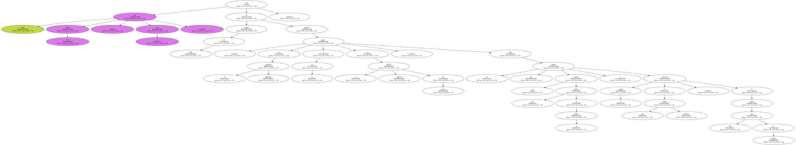" Es cierto que el público presiona mucho , pero todo dependerá del Barça . Si se mete pronto en el partido , no pasará apuros . Creo que tendrá más presión en el Camp Nou después de sus últimos resultados " , afirma el ex azulgrana Nadal.
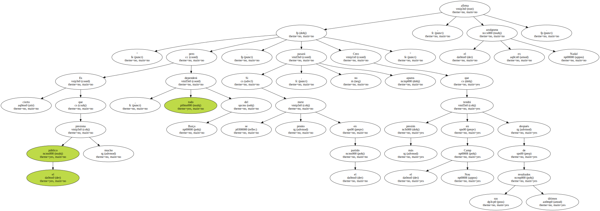El defensa central , que perdió por 2-0 con el Mallorca en la actual edición de la Champions , avisa al Barça de uno de los mayores peligros con que se encontrará en Atenas : " Se trata de un campo muy complicado por sus reducidas dimensiones ".
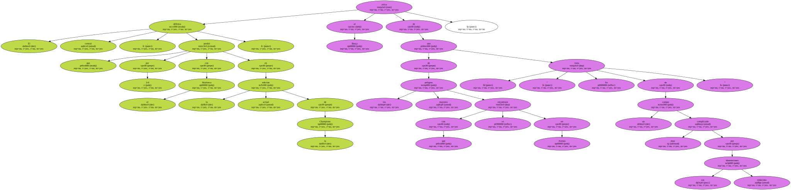Los clubs españoles que han visitado el Apostolos Nikolaidis no comprenden cómo la UEFA autoriza al equipo griego a disputar partidos de la competición de clubs de más alto nivel en un recinto tan viejo y , sobre todo , con accesos e instalaciones tan anticuadas.
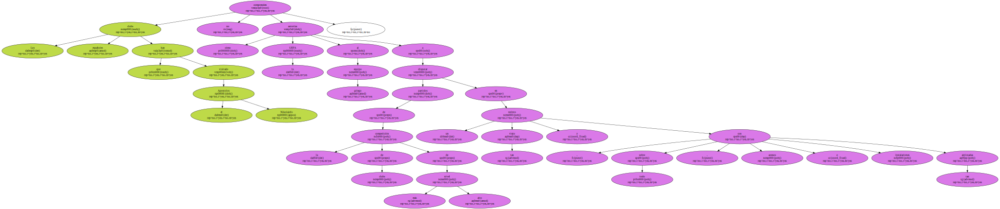Una de las cosas que más impresiona al equipo visitante cuando llega en autocar es la ubicación del estadio , encajonado en medio de callejuelas estrechas.
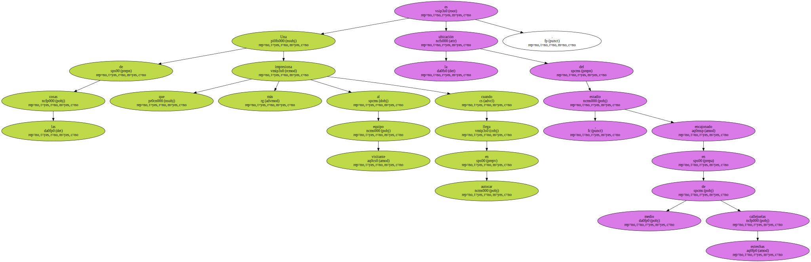Las entradas al recinto son angostas y , a través de ellas , el visitante empieza a tener la sensación de que acude a un lugar donde , probablemente , vivirá un auténtico infierno.

Pero toda esta teoría la dinamitó el grupo de mocosos , encabezado por el joven de 19 años Javier García Portillo , que Vicente del Bosque alineó en Atenas en el último partido de la segunda liguilla.
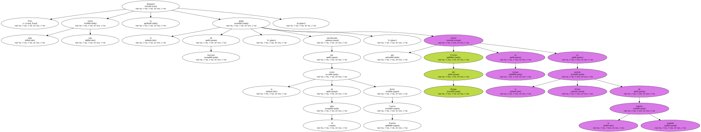El Real Madrid ya estaba clasificado para los cuartos de final y el Panathinaikos necesitaba un punto para asegurarse su presencia entre los ocho mejores.
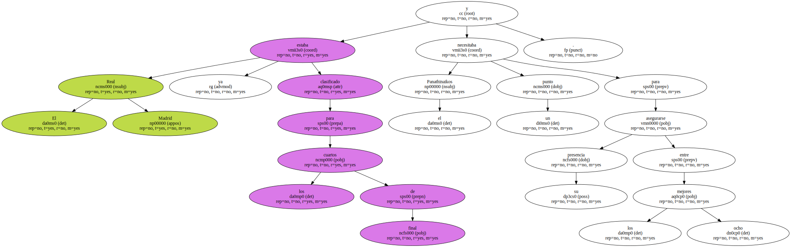Y Miñambres , Bravo y Portillo , entre otros , se olvidaron de la presión , de las bengalas y del griterío y empataron 2-2 en el partido que lanzó a la fama al delantero más prolífico - ha marcado más de 700 goles - que ha pasado por la cantera blanca.
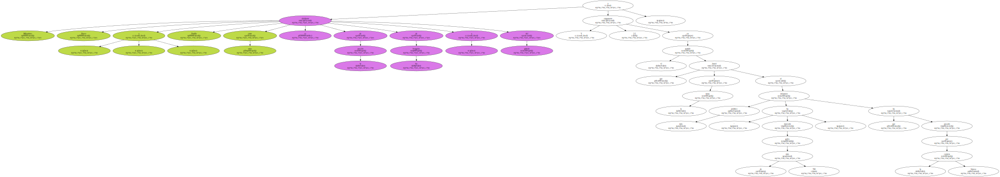13 meses invictos en Atenas.
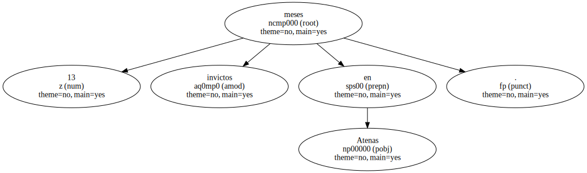Otros no lo han tenido tan fácil en un campo , similar al de Vallecas , de esos que tanto incomodan al Barça.
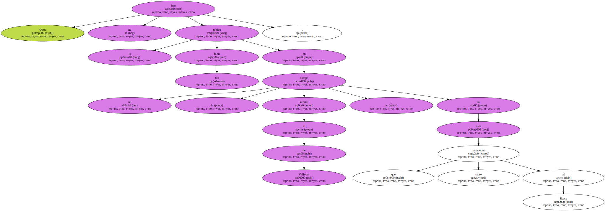El Panathinaikos no pierde en su estadio , en la Liga de Campeones , desde el 20 de febrero del 2001 , cuando cayó por 1-2 ante el Sturm Graz ( Austria ).
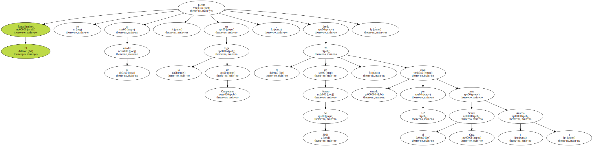Desde ese día , nadie ha ganado al conjunto verde , pese a que por Atenas han pasado Manchester United ( 1-1 ) , Slavia de Praga ( 1-0 ) , Mallorca ( 2-0 ) , Arsenal ( 1-0 ) , Schalke 04 ( 2-0 ) , Oporto ( 0-0 ) , Sparta de Praga ( 2-1 ) y Real Madrid ( 2-2 ).
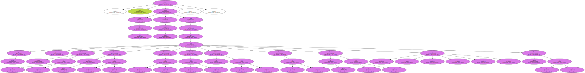" Los griegos son complicados en su campo por la presión de su afición , pero todos los que hemos jugado contra ellos hemos comprobado que bajan mucho su rendimiento cuando juegan fuera de casa . A doble partido , el Barça es el favorito " , afirma Makaay , delantero del Deportivo.
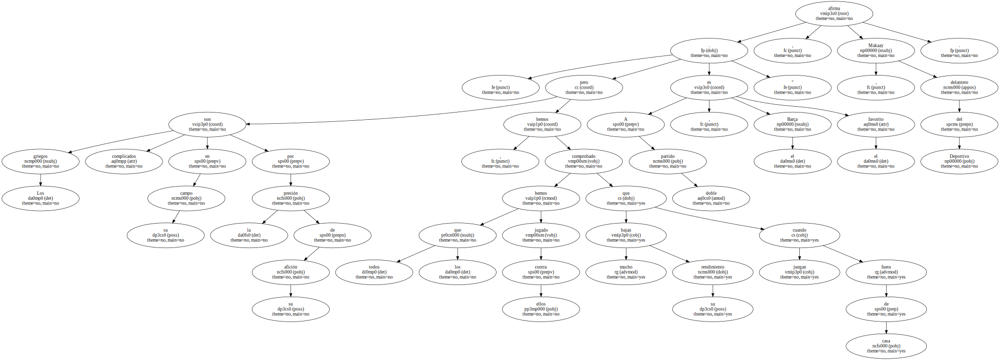Escuchando a los que ya han jugado en el vetusto estadio ateniense , de nada sirven las amenazantes palabras del ex madridista Robert Jarni , actual jugador del Panathinaikos : " El estadio es pequeño y se llenará ".
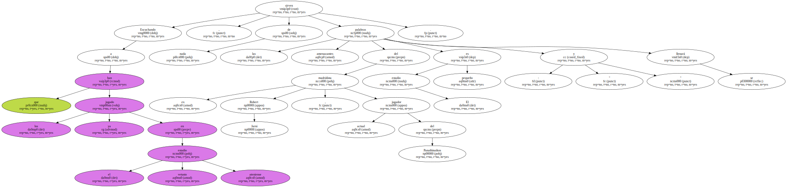" Será un infierno para el Barça durante los 90 minutos ".
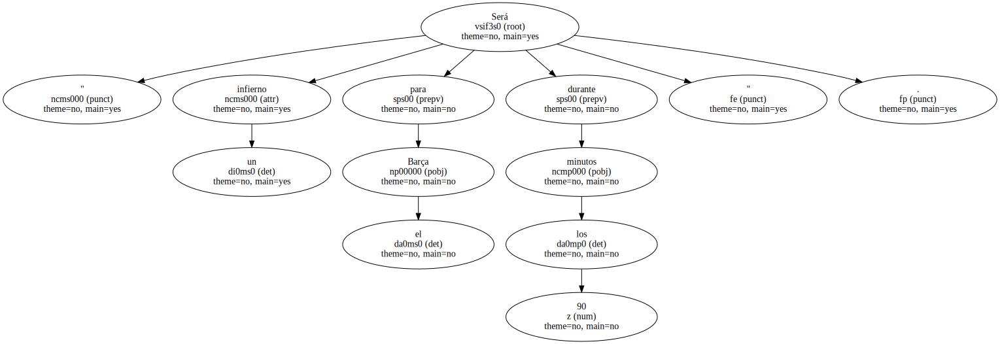